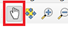

Getting started with QGIS#
Competences:
What is QGIS?
QGIS and basic functionality
Introducing QGIS#
QGIS is an open source geoinformation system software. That means the source code is available for everyone, making QGIS a free application. The entire source code can be viewed and downloaded on qgis/QGIS.
QGIS is a desktop software: that means you get a program that opens up on your computer as a window with buttons you can click, forms you can fill out to do tasks, and it’s generally a visual interactive experience.
You may view, edit, capture and analyze spatial data or create printable maps with it. QGIS was created in 2002 and is a project of volunteers. And it is constantly changing.
QGIS is backed by a large community of users, so it’s easy to find solutions to technical issues by using QGIS forums, blogs, or sub-reddits. The official QGIS community can be found here. Additionally, a list of helpful websites can be found on the wiki here.
Note
QGIS is constantly changing, with new features being added. Because of this, the newer versions can have changes or even bugs (such as crashes). However, there is always a stable
Working with QGIS#
In QGIS, you create projects where you visualise and manipulate geodata. There are three main workflows you will use: Data collection and creation, data processing, and data visualisation. Geodata is loaded into QGIS projects which will represented as layers on a map canvas.
Hint
There is a lot of complex math involved in the GIS, but QGIS takes care of it on it’s own and you don’t need to have a deep understanding of maths and algorithms to use QGIS. As long as you can use Excel and Powerpoint, you shouldn’t have trouble learning how to use QGIS.
QGIS offer tools to create your own geodata. For example, with the digitizing tools, you can create points, polygons, and lines with information which can represent spatial information. Furthermore, georeferencing let’s you add geographic information to various types of data, such as satellite imagery or hand-drawn maps. You will learn how to create geodata and how to georeference data in module 2.
Sometimes working with GIS requires you to go and collect the data in the field. In this case, you can use web and mobile apps.
QGIS offers a wide range of algorithms to process geodata. In the following modules, you will get to know a number of algorithms that are especially useful for GIS in humanitarian work. For example, you can:
Select the houses which are at risk of being flooded
Calculate the area of agricultural land
You will learn more about data processing and manipulation in module 2 and onwards.
QGIS let’s you visualise geodata and create maps to communicate information. It does so by assigning symbols and colours to different elements in your geodata. Assigning a symbology to the geodata is one of the main skills you will develop as a GIS-user and a good visualisation of data is immensely useful when communicating insights. You will learn how to assign symbols in Module 3: Visualisation of Geodata and Map Making
A note on plugins
In addition to the algorithms included in the standard installation, QGIS offers plugins which add additional functionality to the QGIS application. These plugins are developed by independent organizations or the QGIS-community. For example, plugins let you connect to online services such as OpenStreetMap, or add more algorithms to process your data. These can be very useful for certain use cases. There are also plugins specifically designed for humanitarian work. You will learn more about plugins in the following modules. If you want to know how to install them, look into the wiki.
Opening a new project in QGIS#
Open QGIS like any other program on your computer. The start screen of QGIS usually shows you the projects you worked on recently and the option to create a new project.
There are two options to create a new project:
On the start screen click on
Project Template

In the upper left corner click on
Project->New Project
Tip
A QGIS project file has the format ending .qgz
Overview of QGIS Interface#
The interface of QGIS is at first glance quite complex. However, once you know all the components you will be able to orientate yourself quickly. Here you can find a description of all components of the interface.
Tip
When you hover with your mouse cursor over icons, text will appear which explains the function of the button.

Fig. 12 QGIS User Interface. Source:#
Layers List / Browser Panel: The layers list shows all layers/files that are loaded in the project. You can show/hide layers and set other properties.
Toolsbars: Toolbars are shortcuts to execute frequently used commands. For example, there are special toolbars for vector and raster files, but also general ones for saving your project, etc. The toolbar contains, among other things, a list of all the commands you can use. The toolbar also contains the toolbox, which is used later in many of the wiki videos.

Map View: The map view is the central component of every GIS programme. This is where the geodata are displayed. The map view has a projection which does not always have to correspond to the projection of the layers.
Status bar: In the status bar you will find central information about the current map view. Here you can set the projection of the map view and the scale. You can read the coordinates of the mouse pointer and thus quickly find out the coordinates of points on the map. You can rotate your map view, e.g. if you want to create a map facing south.
Side Toolbar. You may see a side toolbar. This is another way to easily open vector and raster files in QGIS.
Locator bar. Here you can search for tools and layers. If you don’t know where to find a tool, you can try here.
Exercise: Create a new QGIS project
In your “GIS_Training” folder, create a subfolder called “Projects”
Open QGIS
Click on
Project->New ProjectIn the top-left corner, click on
Project->Save as, browse to your Projects folder and save the project as “Session1”Click on Save as, browse to your Projects folder and save the project as “Session1”
Open your “Projects” folder and check the .qgz file that you just created
Attention
If you see a * in the title bar, to the left of the name of your project, this means that the project has changes which are unsaved. Since QGIS can crash from time to time, make sure to save your project periodically to avoid losing progress.
Buttons and Shortcuts#
In QGIS, mouse control allows users to interact with the map canvas, enabling functions such as panning, zooming, and selecting features.
Hotkeys in the QGIS interface provide convenient shortcuts for various commands, enhancing efficiency and speeding up workflow. You can find all hotkeys below.
Navigation in the map view
Name |
Menu option |
Shortcut |
Description |
|---|---|---|---|
Map pan |
|
‘Space’, ‘Page Up’, ‘Page Down’ or the ‘Arrow Keys’ |
Move the map |
Pan map to selection |
|
Pans the map to the selected element |
|
Zoom in |
|
‘Ctrl+Alt++’ or mouse wheel |
Zoom into the map |
Zoom out |
|
‘Ctrl+Alt+-’ or mouse wheel |
Zoom out of the map |
Zoom full |
|
‘Ctrl+Shift+F’ |
Zoom to the selected element |
Zoom to selection |
|
‘Ctrl+J’ |
Zoom to the selected element |
Zoom to layer |
Zoom to the selected layer |
||
Zoom to native resolution |
|
Zoom to the native resolution (100%) |
|
Zoom last |
Zoom to the last zoom |
||
Zoom next |
Zoom to the next zoom |


Project managment
Name |
Menu option |
Shortcut |
Description |
|---|---|---|---|
New Project |
|
‘Ctrl’ + ‘N’ |
Create a new project |
Open Project |
‘Ctrl’ + ‘O’ |
Open an existing project |
|
Save |
‘Ctrl’ + ‘S’ |
Save the project |
|
Save as… |
|
‘Ctrl’ + ‘Shift’ + ‘S’ |
Save the project as… |
Properties |
‘Ctrl’ + ‘Shift’ + ‘P’ |
Open the project properties |
|
New print layout |
‘Ctrl’ + ‘P’ |
Opens the Dialog to create a new print layout |
|
Search |
‘Ctrl’ + ‘K’ |
Opens the search bar |


Layer management
Name |
Menu option |
Shortcut |
Description |
|---|---|---|---|
Data source manager |
‘Ctrl’ + ‘L’ |
Add a new layer |
|
New GeoPackage layer |
|
‘Ctrl’ + ‘Shift’ + ‘N’ |
Add a new GeoPackage Layer |
Add vector layer |
‘Ctrl’ + ‘Shift’ + ‘V’ |
Add a new vector layer |
|
Add raster layer |
|
‘Ctrl’ + ‘Shift’ + ‘R’ |
Add a new raster layer |
Remove selected layer |
‘Ctrl’ + ‘D’ |
Remove the selected layer |
|
Toggle layers view |
‘Ctrl’ + ‘1’ |
Toggle the layers view |
|
Toggle browser view |
‘Ctrl’ + ‘2’ |
Toggle the browser view |


Analysis Tools
Name |
Menu option |
Shortcut |
Description |
|---|---|---|---|
Identify Features |
|
‘Ctrl’ + ‘Shift’ + ‘I’ |
Identify features on the map view by clicking on them |
Select feature |
|
Select a feature by area or single click |
|
Select feature by value |
‘F3’ |
Select features by value |
|
Open Attribute table |
|
‘F6’ |
Open the Attribute table |
Open Attribute table with selected features only |
|
‘Shift’ + ‘F6’ |
Open the Attribute table with selected features only |
Open Attribute table with visible features only |
|
‘Ctrl’ + ‘F6’ |
Open the Attribute table with visible features only |


Advanced Tools
Name |
Menu option |
Shortcut |
Description |
|---|---|---|---|
Processing Toolbox |
‘Ctrl’ + ‘Alt’ + ‘T’ |
Opens the Processing Toolbox |
|
Python Console |
|
‘Ctrl’ + ‘Alt’ + ‘P’ |
Opens the Python Console |

Navigating on the Map Canvas#
Moving the map view#
To move on the map canvas with your mouse cursor you need to toggle the hand button.

You can always move on the map canvas with arrow keys on your keyboard.
Zooming in the map view#
The easiest way to zoom on Map Canvas is by scrolling.
Or with the hotkeys Ctrl++ and Ctrl+-

Another way is to use the zoom buttons in the toolbox panel.
Toolbox & Toolbars#
Basically, all the functionality, tools and applications of QGIS are organised in the Toolbox. Some Tools have their own toolbars which you can add to your QGIS interface.
Open Toolbox#
To open the Toolbox in QGIS click on the gearwheel button. Or click on Processing -> Toolbox

You can use the search bar to find specific tools.
Tip
There are cases when you want to do something in QGIS but do not know the exact tool. Sometimes it’s worth just looking for what you think the name of the tool might be.
Show and hide displays and toolbars#
There are toolbars and panels for many different tasks. To avoid an overcrowded interface it is smart to only activate specific toolbars or panels only when you really need them.
To add or remove toolbars from your interface click on View -> Toolbars -> Check or uncheck the toolboxes you want to add or remove.
To add or remove panels from your interface click on View -> TPanels -> Check or uncheck the panels you want to add or remove.
Move and arrange toolbars#
At each toolbar there is a field of two dotted lines. If you move the mouse pointer over it until an arrow cross appears and then hold down the left mouse button, you can move the toolbar. This allows an individualised arrangement of your own tools. By compressing all toolbars into a few lines, the map view window can also be enlarged.
Save & Open QGIS Projects#
To save progress or to open an existing project in QGIS is very similar to programs like MS Word. However, there is one BIG difference. In QGIS, the geodata you work with is not saved in your QGIS projectfile. Instead, the project file only contains the file paths where the geodata were located at the time the project was last saved on the PC. If the location of this geodata is subsequently changed, the error message “handle unavailable layers” will appear when the project is opened again.
Good data organisation with a fixed and well-thought-out folder structure prevents such problems.
Warning
Always organize your data! Check out the Wiki article on Standard Folder Structure for more info.
Open Projects#
To open an existing QGIS project click on Project -> Open… -> Navigate to your project and open it.
Save Projects#
When you save for the first time: To save the QGIS project you are working on click on
Project->Save as…-> Navigate to the folder where you want to save the project -> Give the project a name ->SaveWhen saving your progress: To save progress in a project that was already saved somewhere on your computer, there are two good options:
Use the hotkey
Ctrl+son your keyboard.Click on
Project->Save.